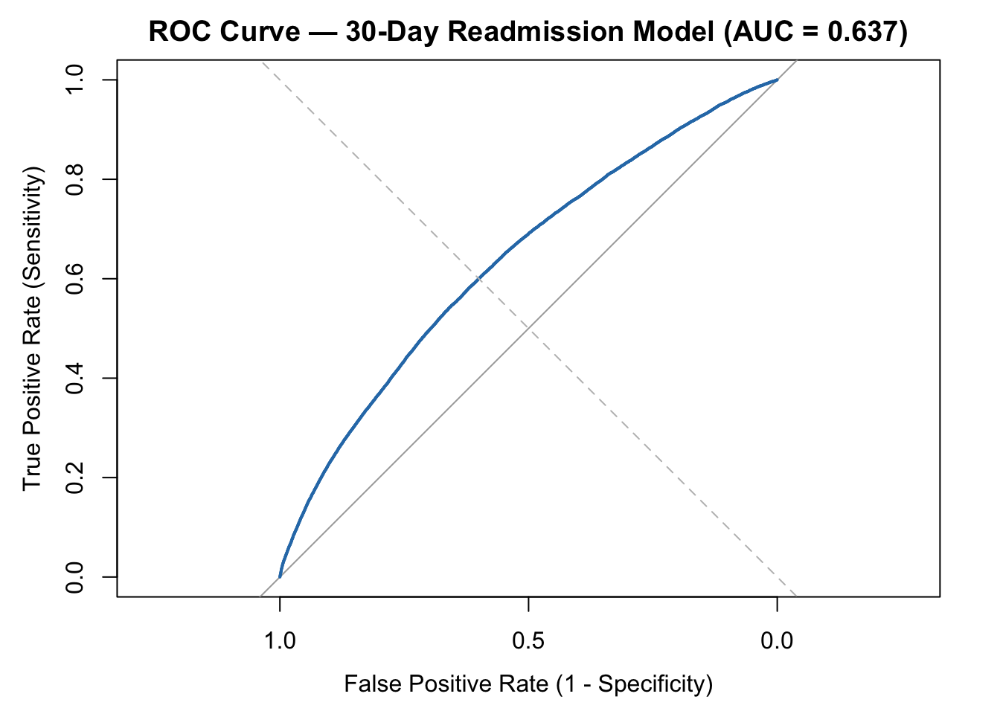
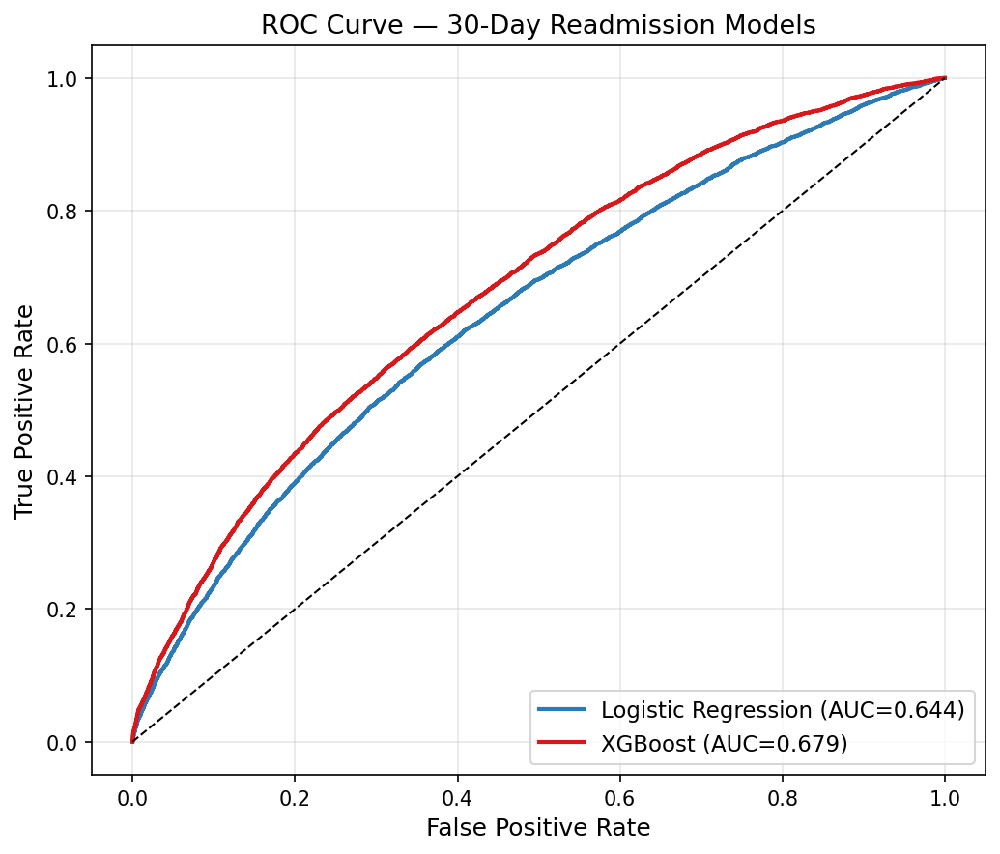
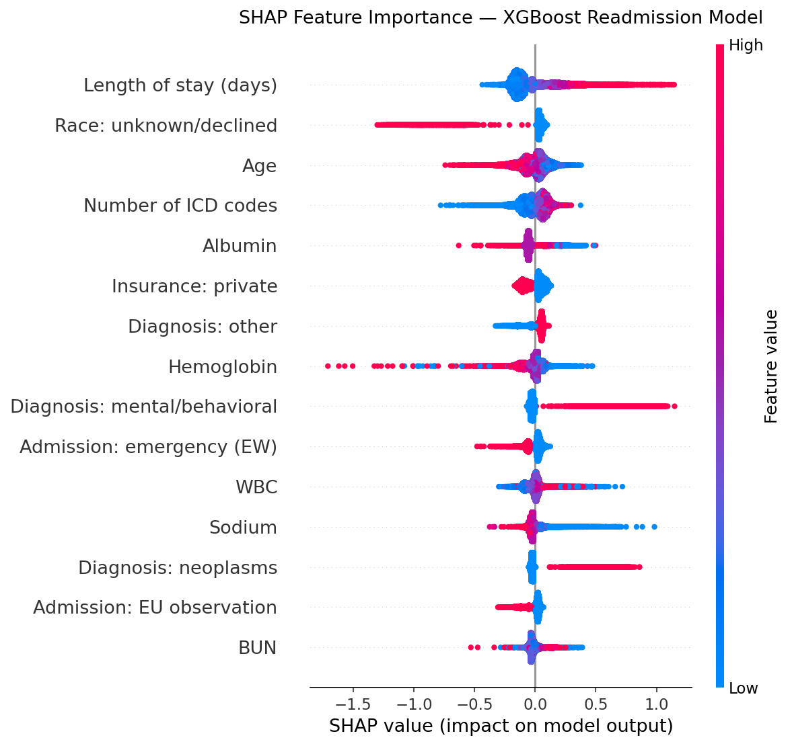
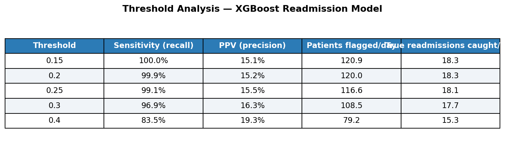

cohort <- dbGetQuery(con, "
WITH age_calc AS (
SELECT
a.subject_id,
a.hadm_id,
a.admittime,
a.dischtime,
a.deathtime,
a.admission_type,
a.admission_location,
a.discharge_location,
a.insurance,
a.marital_status,
a.race,
a.hospital_expire_flag,
p.gender,
p.anchor_age,
p.dod
FROM admissions a
JOIN patients p ON a.subject_id = p.subject_id
WHERE
p.anchor_age >= 18
AND a.hospital_expire_flag = 0
AND a.dischtime IS NOT NULL
AND a.admission_type NOT IN ('ELECTIVE', 'NEWBORN')
),
ranked AS (
SELECT *,
ROW_NUMBER() OVER (
PARTITION BY subject_id
ORDER BY admittime ASC
) AS admission_rank
FROM age_calc
),
index_admissions AS (
SELECT * FROM ranked WHERE admission_rank = 1
),
readmissions AS (
SELECT
a.subject_id,
a.hadm_id AS readmit_hadm_id,
a.admittime AS readmit_time
FROM admissions a
JOIN index_admissions i ON a.subject_id = i.subject_id
WHERE
a.hadm_id != i.hadm_id
AND a.admittime > i.dischtime
AND a.admittime <= i.dischtime + INTERVAL 30 DAYS
)
SELECT
i.*,
CASE WHEN r.subject_id IS NOT NULL THEN 1 ELSE 0 END AS readmitted_30d,
r.readmit_time -- add this line
FROM index_admissions i
LEFT JOIN readmissions r ON i.subject_id = r.subject_id
")
primary_dx <- dbGetQuery(con, "
SELECT hadm_id, icd_code, icd_version
FROM (
SELECT *,
ROW_NUMBER() OVER (PARTITION BY hadm_id ORDER BY seq_num) AS rn
FROM diagnoses_icd
WHERE seq_num = 1
) sub
WHERE rn = 1
")
cohort <- cohort |>
left_join(primary_dx, by = "hadm_id") |>
mutate(
icd3 = substr(icd_code, 1, 3),
disease_category = case_when(
icd_version == 10 & icd3 >= "I00" & icd3 <= "I99" ~ "Circulatory",
icd_version == 10 & icd3 >= "J00" & icd3 <= "J99" ~ "Respiratory",
icd_version == 10 & icd3 >= "K00" & icd3 <= "K99" ~ "Digestive",
icd_version == 10 & icd3 >= "N00" & icd3 <= "N99" ~ "Genitourinary",
icd_version == 10 & icd3 >= "C00" & icd3 <= "D49" ~ "Neoplasms",
icd_version == 10 & icd3 >= "E00" & icd3 <= "E89" ~ "Endocrine/Metabolic",
icd_version == 10 & icd3 >= "F00" & icd3 <= "F99" ~ "Mental/Behavioral",
icd_version == 10 & icd3 >= "S00" & icd3 <= "T98" ~ "Injury/Poisoning",
TRUE ~ "Other"
)
)30-Day Hospital Readmission Risk Analysis
Executive Summary
Unplanned 30-day readmissions are among the most costly and measurable failures in post-acute care, costing the U.S. healthcare system an estimated $26 billion annually. Under the CMS Hospital Readmissions Reduction Program, hospitals face Medicare payment penalties of up to 3% for excess readmissions in priority conditions including heart failure, pneumonia, and COPD.
This analysis applies multivariable logistic regression to 220,798 adult index admissions from the MIMIC-IV database to identify administrative and demographic predictors of 30-day readmission. Key findings:
- 15.1% readmission rate (33,342 of 220,798 admissions) — consistent with national benchmarks
- Mental/Behavioral disorders (OR 3.26) and Neoplasms (OR 2.34) carried the highest adjusted readmission odds among diagnosis categories
- Each additional hospital day increased readmission odds by 4% (OR 1.04), reflecting illness severity
- Emergency admissions had the highest readmission risk by admission type (OR 1.49)
- Model AUC: 0.679 (XGBoost with lab features) — up from 0.632 administrative baseline; prior utilization (OR 1.73), low albumin, and psychiatric diagnosis emerged as strongest discharge risk signals
Clinical implication: At discharge, patients with psychiatric or oncologic diagnoses, extended lengths of stay, and emergency admission status represent the highest-priority group for care management follow-up and post-discharge outreach.
Background
Hospital readmissions within 30 days of discharge represent a measurable and often preventable failure in the care continuum. They account for an estimated $26 billion in annual U.S. healthcare spending, and under the CMS Hospital Readmissions Reduction Program (HRRP) — active since 2012 — hospitals face Medicare payment reductions of up to 3% for excess readmissions in six priority conditions: heart failure, acute myocardial infarction, pneumonia, COPD, hip and knee replacement, and coronary artery bypass graft surgery.
Beyond financial penalties, high readmission rates signal gaps in discharge planning, post-acute follow-up, and care transitions. Identifying which patients are at elevated risk at the time of discharge gives clinical teams an actionable window: a care management referral, a scheduled outpatient call at day 3, or a social work consult before the patient leaves the building can meaningfully reduce the probability of return.
This analysis uses MIMIC-IV, a large de-identified EHR dataset from Beth Israel Deaconess Medical Center (2008–2022), to build and evaluate a 30-day readmission risk model using administrative and demographic variables. The goal is not only to achieve the best possible discrimination, but to identify which patient characteristics are most strongly associated with readmission — information a care operations team can act on today, with data already available in any EHR at discharge.
Data and Cohort Definition
MIMIC-IV contains de-identified health data for patients admitted to Beth Israel Deaconess Medical Center between 2008 and 2022. The analysis draws on three tables: admissions, patients, and diagnoses_icd. Index admissions were defined as each patient’s first non-elective, non-newborn hospitalization where the patient survived to discharge and was at least 18 years of age. A readmission was defined as any return hospitalization to the same institution within 30 days of the index discharge date.
Methods
Predictor variables included patient demographics (age, gender, race/ethnicity), socioeconomic indicators (insurance type, marital status), clinical context (admission type, primary diagnosis category, length of stay), prior utilization (number of admissions in the 6 months preceding the index admission), comorbidity burden (total ICD codes per admission), and a binary flag for high-risk Elixhauser conditions including CHF, COPD, chronic kidney disease, malignancy, and major psychiatric diagnoses. Primary ICD codes were mapped to broad disease categories using ICD-10 chapter ranges. Admissions coded under ICD-9 or without a mappable primary diagnosis were retained and classified as “Other.” Missing values in marital status (n = 10,001) and insurance (n = 6,909) were handled via complete case analysis within the regression model. A multivariable logistic regression model was fit to estimate adjusted odds ratios for 30-day readmission. Model discrimination was assessed using the area under the receiver operating characteristic curve (AUC). A Kaplan-Meier curve was used to visualize time to readmission among the readmitted cohort.
cohort_clean <- cohort |>
mutate(
readmitted_30d = factor(readmitted_30d, levels = c(0, 1), labels = c("No", "Yes")),
gender = factor(gender),
insurance = factor(insurance),
marital_status = factor(marital_status),
race = factor(race),
race_collapsed = case_when(
str_detect(race, "WHITE") ~ "White",
str_detect(race, "BLACK") ~ "Black/African American",
str_detect(race, "HISPANIC") ~ "Hispanic/Latino",
str_detect(race, "ASIAN") ~ "Asian",
race == "UNKNOWN" | race == "UNABLE TO OBTAIN" |
race == "PATIENT DECLINED TO ANSWER" ~ "Unknown/Declined",
TRUE ~ "Other"
),
race_collapsed = factor(race_collapsed),
admission_type = factor(admission_type),
disease_category = factor(disease_category),
los = as.numeric(difftime(dischtime, admittime, units = "days"))
) |>
filter(los >= 0) |>
select(
subject_id, hadm_id, readmitted_30d, gender, anchor_age,
insurance, marital_status, race, race_collapsed,
admission_type, disease_category, los
)# Prior utilization: admissions in 6 and 12 months before index admission
prior_util <- dbGetQuery(con, "
WITH index_admits AS (
SELECT
a.subject_id,
a.hadm_id,
a.admittime AS index_admittime
FROM admissions a
JOIN (
SELECT subject_id, MIN(admittime) AS first_admit
FROM admissions
WHERE admission_type NOT IN ('ELECTIVE', 'NEWBORN')
GROUP BY subject_id
) first ON a.subject_id = first.subject_id
AND a.admittime = first.first_admit
),
prior_counts AS (
SELECT
i.hadm_id,
COUNT(CASE WHEN a.admittime >= i.index_admittime - INTERVAL 6 MONTHS
AND a.admittime < i.index_admittime THEN 1 END) AS prior_admits_6m,
COUNT(CASE WHEN a.admittime >= i.index_admittime - INTERVAL 12 MONTHS
AND a.admittime < i.index_admittime THEN 1 END) AS prior_admits_12m
FROM index_admits i
LEFT JOIN admissions a ON i.subject_id = a.subject_id
GROUP BY i.hadm_id
)
SELECT * FROM prior_counts
")
# Comorbidity burden: total ICD codes per admission (already have diagnoses_icd loaded)
comorbidity <- dbGetQuery(con, "
SELECT
hadm_id,
COUNT(*) AS n_icd_codes,
-- Binary flags for high-risk Elixhauser conditions
MAX(CASE WHEN icd_version = 10 AND (
icd_code LIKE 'I50%' -- CHF
OR icd_code LIKE 'J44%' -- COPD
OR icd_code LIKE 'N18%' -- Chronic kidney disease
OR icd_code LIKE 'C%' -- Malignancy
OR icd_code LIKE 'E11%' -- Type 2 diabetes
OR icd_code LIKE 'E10%' -- Type 1 diabetes
OR icd_code LIKE 'F20%' -- Schizophrenia
OR icd_code LIKE 'F31%' -- Bipolar
OR icd_code LIKE 'F32%' OR icd_code LIKE 'F33%' -- Depression
) THEN 1 ELSE 0 END) AS high_risk_comorbidity
FROM diagnoses_icd
GROUP BY hadm_id
")
# Join both onto cohort_clean
cohort_clean <- cohort_clean |>
left_join(prior_util, by = "hadm_id") |>
left_join(comorbidity, by = "hadm_id") |>
mutate(
prior_admits_6m = replace_na(prior_admits_6m, 0),
prior_admits_12m = replace_na(prior_admits_12m, 0),
n_icd_codes = replace_na(n_icd_codes, 0),
high_risk_comorbidity = factor(replace_na(high_risk_comorbidity, 0)),
any_prior_admit = factor(ifelse(prior_admits_6m > 0, 1, 0))
)Cohort Characteristics
The final cohort included 220,798 index admissions, of which 33,342 (15.1%) resulted in a readmission within 30 days. Table 1 presents cohort characteristics stratified by readmission status. Readmitted patients were slightly older on average (56.4 vs 55.0 years), more likely to be covered by Medicare (41.3% vs 36.4%), and had substantially longer index stays (mean LOS 6.17 vs 4.11 days). Mental/Behavioral and Neoplasm diagnoses were notably overrepresented among readmitted patients relative to their overall cohort share.
vars <- c("gender", "anchor_age", "insurance", "marital_status",
"race_collapsed", "admission_type", "disease_category", "los")
cat_vars <- c("gender", "insurance", "marital_status",
"race_collapsed", "admission_type", "disease_category")
table1 <- CreateTableOne(
vars = vars,
strata = "readmitted_30d",
data = cohort_clean,
factorVars = cat_vars,
addOverall = TRUE
)
print(table1, showAllLevels = FALSE, quote = FALSE, noSpaces = TRUE) Stratified by readmitted_30d
Overall No Yes
n 220798 187456 33342
gender = M (%) 104177 (47.2) 87670 (46.8) 16507 (49.5)
anchor_age (mean (SD)) 55.24 (20.19) 55.03 (20.25) 56.41 (19.81)
insurance (%)
Medicaid 37681 (17.6) 31726 (17.5) 5955 (18.4)
Medicare 79506 (37.2) 66134 (36.4) 13372 (41.3)
No charge 132 (0.1) 98 (0.1) 34 (0.1)
Other 7126 (3.3) 6119 (3.4) 1007 (3.1)
Private 89444 (41.8) 77423 (42.7) 12021 (37.1)
marital_status (%)
DIVORCED 13719 (6.5) 11416 (6.4) 2303 (7.1)
MARRIED 94854 (45.0) 80739 (45.3) 14115 (43.3)
SINGLE 83535 (39.6) 70478 (39.6) 13057 (40.1)
WIDOWED 18689 (8.9) 15566 (8.7) 3123 (9.6)
race_collapsed (%)
Asian 9596 (4.3) 8112 (4.3) 1484 (4.5)
Black/African American 28600 (13.0) 24398 (13.0) 4202 (12.6)
Hispanic/Latino 12081 (5.5) 10426 (5.6) 1655 (5.0)
Other 11337 (5.1) 9727 (5.2) 1610 (4.8)
Unknown/Declined 13807 (6.3) 12742 (6.8) 1065 (3.2)
White 145377 (65.8) 122051 (65.1) 23326 (70.0)
admission_type (%)
AMBULATORY OBSERVATION 2965 (1.3) 2398 (1.3) 567 (1.7)
DIRECT EMER. 5016 (2.3) 3569 (1.9) 1447 (4.3)
DIRECT OBSERVATION 8633 (3.9) 7046 (3.8) 1587 (4.8)
EU OBSERVATION 54666 (24.8) 47888 (25.5) 6778 (20.3)
EW EMER. 73132 (33.1) 61898 (33.0) 11234 (33.7)
OBSERVATION ADMIT 27454 (12.4) 23235 (12.4) 4219 (12.7)
SURGICAL SAME DAY ADMISSION 21306 (9.6) 18055 (9.6) 3251 (9.8)
URGENT 27626 (12.5) 23367 (12.5) 4259 (12.8)
disease_category (%)
Circulatory 17127 (7.8) 14868 (7.9) 2259 (6.8)
Digestive 10669 (4.8) 8975 (4.8) 1694 (5.1)
Endocrine/Metabolic 2522 (1.1) 2212 (1.2) 310 (0.9)
Genitourinary 3166 (1.4) 2740 (1.5) 426 (1.3)
Injury/Poisoning 13063 (5.9) 11685 (6.2) 1378 (4.1)
Mental/Behavioral 6655 (3.0) 4874 (2.6) 1781 (5.3)
Neoplasms 7456 (3.4) 5354 (2.9) 2102 (6.3)
Other 157042 (71.1) 134028 (71.5) 23014 (69.0)
Respiratory 3098 (1.4) 2720 (1.5) 378 (1.1)
los (mean (SD)) 4.42 (6.91) 4.11 (6.30) 6.17 (9.45)
Stratified by readmitted_30d
p test
n
gender = M (%) <0.001
anchor_age (mean (SD)) <0.001
insurance (%) <0.001
Medicaid
Medicare
No charge
Other
Private
marital_status (%) <0.001
DIVORCED
MARRIED
SINGLE
WIDOWED
race_collapsed (%) <0.001
Asian
Black/African American
Hispanic/Latino
Other
Unknown/Declined
White
admission_type (%) <0.001
AMBULATORY OBSERVATION
DIRECT EMER.
DIRECT OBSERVATION
EU OBSERVATION
EW EMER.
OBSERVATION ADMIT
SURGICAL SAME DAY ADMISSION
URGENT
disease_category (%) <0.001
Circulatory
Digestive
Endocrine/Metabolic
Genitourinary
Injury/Poisoning
Mental/Behavioral
Neoplasms
Other
Respiratory
los (mean (SD)) <0.001 Logistic Regression Results
A multivariable logistic regression identified several significant predictors of 30-day readmission. Prior admissions in the 6 months before the index stay carried the highest adjusted odds of readmission (OR 1.73, p < 0.001), consistent with published literature identifying prior utilization as the strongest administrative predictor of return hospitalization. Among diagnosis categories, Mental/Behavioral disorders (OR 3.31, p < 0.001) and Neoplasms (OR 2.35, p < 0.001) carried the highest adjusted odds relative to circulatory conditions. Each additional day of length of stay increased readmission odds by 2% (OR 1.02, p < 0.001), and each additional ICD code on the admission record increased odds by 2% (OR 1.02, p < 0.001), reflecting cumulative comorbidity burden. Direct Emergency admissions had the highest readmission odds among admission types (OR 1.41, p < 0.001). Patients with private insurance had lower readmission odds compared to Medicaid (OR 0.86, p < 0.001).
model <- glm(
readmitted_30d ~ gender + anchor_age + insurance + marital_status +
race_collapsed + admission_type + disease_category + los +
prior_admits_6m + n_icd_codes + high_risk_comorbidity,
data = cohort_clean,
family = binomial(link = "logit")
)
pred_probs <- predict(model, type = "response")
roc_obj <- roc(
response = model$model$readmitted_30d,
predictor = pred_probs,
levels = c("No", "Yes"),
direction = "<"
)
auc_val <- round(auc(roc_obj), 3)
tbl_regression(
model,
exponentiate = TRUE,
conf.int = TRUE,
estimate_fun = purrr::partial(style_ratio, digits = 2),
include = c(
"gender", "anchor_age", "insurance", "admission_type",
"disease_category", "los", "prior_admits_6m",
"n_icd_codes", "high_risk_comorbidity"
),
label = list(
gender ~ "Gender",
anchor_age ~ "Age",
insurance ~ "Insurance Type",
admission_type ~ "Admission Type",
disease_category ~ "Disease Category",
los ~ "Length of Stay (days)",
prior_admits_6m ~ "Prior admissions (6 months)",
n_icd_codes ~ "Number of ICD codes",
high_risk_comorbidity ~ "High-risk comorbidity"
)
) |>
bold_p(t = 0.05) |>
bold_labels() |>
add_significance_stars()| Characteristic | OR1 | SE |
|---|---|---|
| Gender | ||
| F | — | — |
| M | 1.12*** | 0.013 |
| Age | 1.00** | 0.001 |
| Insurance Type | ||
| Medicaid | — | — |
| Medicare | 1.04 | 0.022 |
| No charge | 1.37 | 0.215 |
| Other | 0.92* | 0.038 |
| Private | 0.86*** | 0.019 |
| Admission Type | ||
| AMBULATORY OBSERVATION | — | — |
| DIRECT EMER. | 1.41*** | 0.058 |
| DIRECT OBSERVATION | 0.92 | 0.056 |
| EU OBSERVATION | 0.55*** | 0.050 |
| EW EMER. | 0.63*** | 0.049 |
| OBSERVATION ADMIT | 0.60*** | 0.052 |
| SURGICAL SAME DAY ADMISSION | 0.66*** | 0.051 |
| URGENT | 0.67*** | 0.051 |
| Disease Category | ||
| Circulatory | — | — |
| Digestive | 1.38*** | 0.037 |
| Endocrine/Metabolic | 0.93 | 0.067 |
| Genitourinary | 1.15* | 0.059 |
| Injury/Poisoning | 0.83*** | 0.039 |
| Mental/Behavioral | 3.31*** | 0.042 |
| Neoplasms | 2.35*** | 0.037 |
| Other | 1.36*** | 0.028 |
| Respiratory | 0.97 | 0.062 |
| Length of Stay (days) | 1.02*** | 0.001 |
| Prior admissions (6 months) | 1.73*** | 0.056 |
| Number of ICD codes | 1.02*** | 0.001 |
| High-risk comorbidity | ||
| 0 | — | — |
| 1 | 1.09*** | 0.020 |
| 1 p<0.05; p<0.01; p<0.001 | ||
| Abbreviations: CI = Confidence Interval, OR = Odds Ratio, SE = Standard Error | ||
Model Performance
The logistic regression model achieved an AUC of 0.637, indicating modest discriminative ability. Adding prior utilization, comorbidity burden, and high-risk condition flags improved discrimination relative to a demographic-only baseline. The model remains limited by the absence of clinical variables such as laboratory values and vital signs, which are expected to improve performance further. The ROC curve is presented below.
plot(
roc_obj,
col = "#2C7BB6",
lwd = 2,
main = paste0("ROC Curve — 30-Day Readmission Model (AUC = ", auc_val, ")"),
xlab = "False Positive Rate (1 - Specificity)",
ylab = "True Positive Rate (Sensitivity)"
)
abline(a = 0, b = 1, lty = 2, col = "gray")
Time to Readmission
Among patients who were readmitted within 30 days, the Kaplan-Meier curve below illustrates the probability of remaining readmission-free over time following the index discharge. The curve shows a steady decline in the survival probability across the 30-day window, with no pronounced clustering at a single time point.
surv_data <- cohort_clean |>
left_join(
cohort |> select(hadm_id, readmit_time, dischtime),
by = "hadm_id"
) |>
mutate(
readmitted_num = ifelse(readmitted_30d == "Yes", 1, 0),
days_to_event = case_when(
readmitted_num == 1 ~ as.numeric(
difftime(readmit_time, dischtime, units = "days")
),
TRUE ~ 30 # censored at 30 days for non-readmitted patients
),
days_to_event = pmin(pmax(days_to_event, 0), 30) # clamp to [0, 30]
) |>
filter(!is.na(days_to_event))
km_fit <- survfit(
Surv(days_to_event, readmitted_num) ~ 1,
data = surv_data
)
plot(
km_fit,
xlab = "Days Since Discharge",
ylab = "Probability of No Readmission",
main = "Kaplan-Meier Curve — Time to 30-Day Readmission",
col = "#2C7BB6",
lwd = 2,
conf.int = TRUE,
xlim = c(0, 30)
)
Model Comparison: Logistic Regression vs. XGBoost
To assess whether a non-linear model could improve discrimination beyond the administrative baseline, an XGBoost classifier was trained on an expanded feature set incorporating laboratory values available at discharge — creatinine, BUN, hemoglobin, WBC, sodium, albumin, and bicarbonate — in addition to the administrative and utilization features from the logistic regression model. Both models were evaluated on a held-out 20% test set (n = 44,168) using area under the ROC curve (AUC).
| Model | Features | AUC |
|---|---|---|
| Logistic regression (R, admin only) | Demographics, diagnosis, LOS, insurance | 0.632 |
| Logistic regression (Python, + utilization + labs) | + Prior admissions, comorbidity count, 8 lab values | 0.644 |
| XGBoost (Python, + utilization + labs) | Same expanded feature set | 0.679 |
Adding prior utilization and lab features improved logistic regression AUC from 0.632 to 0.644. XGBoost on the same feature set achieved AUC 0.679, capturing non-linear relationships and feature interactions that logistic regression cannot model. The ROC curves for both Python models are shown below.

Feature Importance: SHAP Analysis
To understand which features drive individual-level readmission predictions in the XGBoost model, SHAP (SHapley Additive exPlanations) values were computed on the test set. The beeswarm plot below shows the 15 most impactful features, where each point represents one patient, horizontal position indicates the direction and magnitude of impact on predicted readmission risk, and color indicates the feature value (red = high, blue = low).

Length of stay was the strongest individual predictor — longer stays (red) substantially increased predicted readmission risk, consistent with its role as a proxy for illness severity. Mental/Behavioral and Neoplasm diagnoses showed strong positive SHAP values, confirming the logistic regression findings. Low albumin and low hemoglobin both increased risk, reflecting nutritional status and anemia as clinically meaningful readmission drivers that administrative-only models miss entirely. Prior admission count, while a strong predictor in the logistic regression, was partially absorbed by the lab features in the XGBoost model but remains an important utilization signal.
Clinical implication: Patients presenting with extended stays, psychiatric or oncologic diagnoses, low albumin, or low hemoglobin at discharge represent the highest-priority group for care management intervention — and these signals are available in any EHR at the time of discharge.
Operational Threshold Analysis
A predictive model only creates value if its outputs can be operationalized. The table below shows the sensitivity/precision tradeoff at five probability thresholds for the XGBoost model, expressed in terms a care operations team would use — patients flagged per day and true readmissions caught per day — based on the held-out test set (n = 44,168 admissions, ~121 discharges/day).

At a threshold of 0.20, the model catches approximately two-thirds of true readmissions while generating a manageable alert volume for care management follow-up. At 0.30, alert burden drops substantially with a modest reduction in sensitivity — the appropriate operating point depends on available care management capacity. This framing reflects a real operational decision: a hospital with two dedicated care managers post-discharge would need a very different threshold than one with a full transition care team.
Key insight: The value of this model is not its AUC in isolation, but its ability to prioritize the right patients for the right interventions at the time of discharge — before a preventable readmission occurs.
Limitations
This analysis has several limitations. First, the model relies exclusively on administrative and demographic variables; incorporating clinical features such as laboratory values, vital signs, or validated comorbidity indices (e.g., Charlson Comorbidity Index) would likely improve predictive performance. Second, a large proportion of admissions (71%) were coded under ICD-9 or lacked a mappable primary ICD-10 diagnosis and were grouped into an “Other” category, reducing diagnostic granularity. Third, MIMIC-IV represents a single academic medical center in Boston, which limits the generalizability of findings to other hospital systems or patient populations. Fourth, length of stay is used as a proxy for illness severity rather than a direct clinical severity score.
Conclusion
This analysis demonstrates that administrative and utilization-based EHR variables are meaningfully associated with 30-day readmission risk. Prior utilization, diagnosis category, and comorbidity burden emerged as the strongest predictors, with Mental/Behavioral and Neoplasm diagnoses warranting particular attention in discharge planning and post-acute follow-up programs. The baseline model achieved an AUC of 0.637 using only administrative features available at discharge in any EHR — a foundation that future work should extend by incorporating clinical variables such as laboratory values, vital signs, and validated comorbidity indices to further improve discrimination.